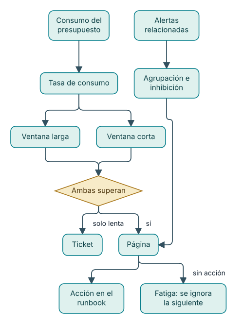
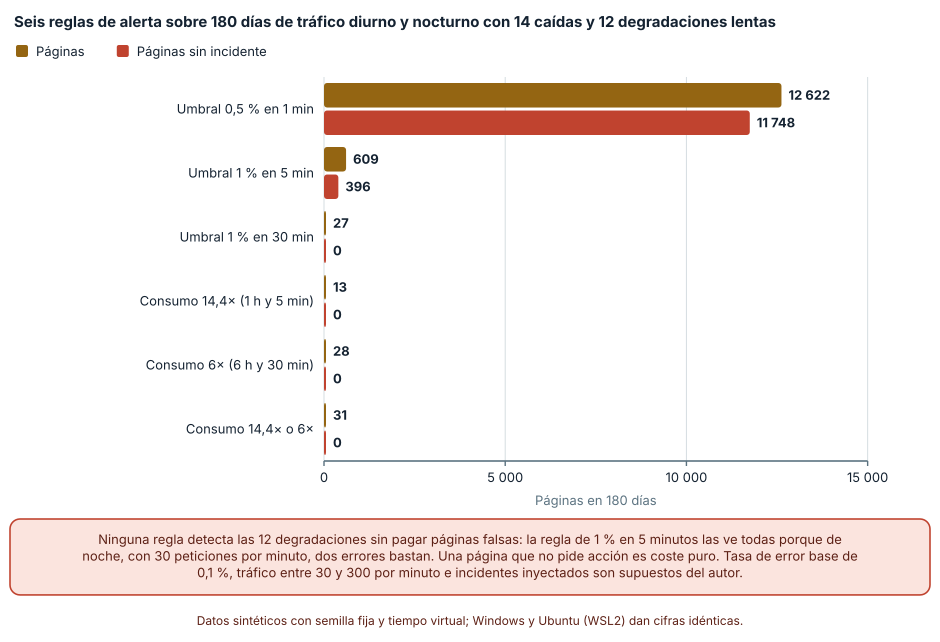
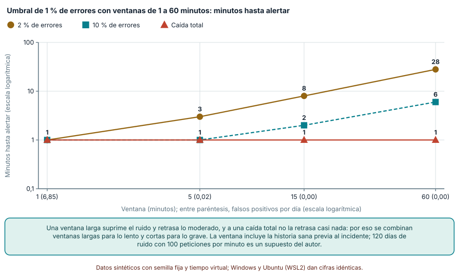
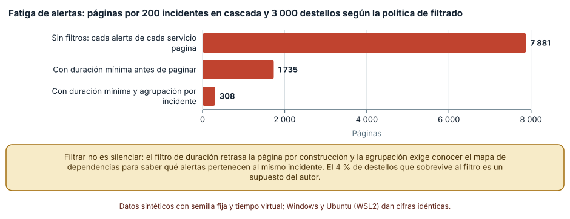

← SE-497 — SLI, SLO, SLA y presupuestos de error · ↑ Parte 41 · 📚 Índice completo · 🌐 Portal · SE-499 — Runbooks, on-call y escalamiento →
Punto profesional y fundamento pedagógico
Punto profesional. La clase existe para que diseñes alertas que despierten a una persona solo cuando hay algo que hacer ahora, para que las derives del consumo del presupuesto de error en lugar de umbrales arbitrarios y para que midas el ruido que generan. Una alerta es una interrupción pagada con atención humana: cada una que no pide acción enseña a ignorar la siguiente.
Por qué aparece aquí. Sigue a SLI, SLO, SLA y presupuestos de error: el objetivo y el presupuesto dan la vara para decidir qué merece una página. Prepara SE-499, donde se define qué hace la persona que la recibe. El caso conductor sigue siendo la API de entregas.
Error conceptual que debe corregir. Creer que más alertas dan más seguridad y que una alerta correcta es la que se dispara cuando la métrica pasa un umbral. Una alerta es correcta si es urgente, accionable y específica; un umbral sin ventana ni consumo de presupuesto produce ruido o silencio.
Secuencia de aprendizaje. Antes de ver los resultados predices cuántas páginas genera un umbral de 1 % en 5 minutos en seis meses, cuántas de ellas corresponden a un incidente y qué ventana minimiza los falsos positivos sin retrasar demasiado una caída. Después contrastas con tres experimentos y rediseñas el conjunto de alertas de la API. La secuencia usa predicción, explicación propia, contraste y recuperación. ICAP distingue participación de construcción de conocimiento; How People Learn II respalda diseñar la práctica con contextos reales y retroalimentación.
Evidencia de aprendizaje. alertas-log.md con la predicción, las tres figuras reproducidas, el conjunto de alertas de la API de entregas clasificadas en página, ticket y registro, y una nota que separe lo simulado de lo que habría que medir en producción.
Límite de la conclusión. El tráfico, las caídas, las degradaciones y los destellos son sintéticos y con semilla fija. No se usó ningún sistema de alertas ni se midió la reacción de ninguna persona; el estudio sobre fatiga citado es de un entorno clínico y se usa solo como respaldo del fenómeno, no de las cifras.
Trazabilidad fuente → afirmación
| Fuente primaria u oficial | Afirmación que respalda | Lo que no prueba |
|---|---|---|
| Google SRE Workbook: Alerting on SLOs | Compara estrategias de alerta sobre el consumo del presupuesto y recomienda alertas de varias ventanas y varias tasas de consumo. | No fija las tasas para tu servicio. |
| Google SRE: Practical Alerting | Propone alertar sobre síntomas, mantener las alertas simples y evitar páginas que no requieren acción inmediata. | No da cifras de ruido aceptable. |
| Prometheus: Alertmanager | Describe la agrupación, la inhibición y el silenciamiento de alertas. | No define tus reglas. |
| Ancker et al., «Effects of workload, work complexity, and repeated alerts on alert fatigue» (2017) | Encontró que, en un sistema clínico de apoyo a decisiones, la probabilidad de aceptar una alerta disminuía cuando se repetía. | No mide guardias de software. |
Antes de empezar
Recupera lo aprendido en SE-497: el presupuesto de error es la fiabilidad que se puede gastar. La pregunta activa es: ¿a qué ritmo de consumo del presupuesto debe sonar un teléfono a las 3 de la madrugada, y cuántas veces sonará sin que haya nada que hacer?
Prerrequisitos
- Haber completado
SE-497o poder explicar qué es un presupuesto de error. - Python 3.11 o posterior; los experimentos usan solo la biblioteca estándar (
random,math). - Nociones de ventana móvil y de proporción de errores.
Problema auténtico
La API de entregas tiene 40 alertas. Cada vez que el cierre de un plazo satura la cola, suenan once a la vez: latencia de la pasarela, de la API, de la base, de la cola y de los trabajadores, cada una con sus propias oscilaciones. La persona de guardia las silencia en bloque. Un jueves de madrugada, una degradación lenta (0,6 % de errores durante seis horas) consume un tercio del presupuesto del mes sin superar ningún umbral porque todos eran del 1 % o más. Semanas después un umbral de 0,5 % en un minuto despierta a la guardia una docena de veces por noche por una sola petición fallida. La clase enseña a distinguir lo urgente de lo ruidoso y a medirlo.
Objetivos observables
Al terminar podrás:
- clasificar una condición como página, ticket o registro según su urgencia y su acción;
- derivar una alerta del consumo del presupuesto con una tasa y dos ventanas;
- medir de un conjunto de reglas sus páginas, sus falsos positivos, su retraso y las degradaciones lentas que pierde;
- reducir el ruido con duración mínima y agrupación y cuantificar su efecto y su coste;
- elegir la ventana de una alerta según el equilibrio entre ruido y retraso.
Mapa conceptual

El mapa separa el qué (consumo del presupuesto), el cuándo (dos ventanas) y el cuánto ruido (agrupación). Una página sin acción cierra el ciclo hacia la fatiga.
Temas y por qué importan
| Tema | Por qué cambia una decisión profesional | Evidencia mínima |
|---|---|---|
| Página, ticket y registro | Cada urgencia merece un canal distinto. | Predicción, traza causal y contraejemplo de Página, ticket y registro en alertas-log.md |
| Alertas por consumo | Convierten un objetivo en una condición verificable. | Predicción, traza causal y contraejemplo de Alertas por consumo en alertas-log.md |
| Umbrales y ventanas | La ventana fija el equilibrio entre ruido y retraso. | Predicción, traza causal y contraejemplo de Umbrales y ventanas en alertas-log.md |
| Ruido y agrupación | Una causa produce muchas alertas. | Predicción, traza causal y contraejemplo de Ruido y agrupación en alertas-log.md |
| Fatiga | Las páginas sin acción cuestan atención futura. | Predicción, traza causal y contraejemplo de Fatiga en alertas-log.md |
Conceptos y decisiones
1. Página, ticket y registro
Una condición puede comunicarse de tres maneras. Una página interrumpe a una persona de inmediato y se reserva para lo que exige acción ahora. Un ticket se atiende en horario laboral y sirve para lo que no puede esperar demasiado pero no justifica interrumpir. Un registro (o un panel) conserva el dato para quien lo consulte. Tres preguntas ordenan la decisión: ¿afecta ya o afectará pronto a quien usa el servicio?, ¿es accionable por la persona de guardia con lo que sabe?, ¿puede esperar a mañana sin consecuencias? Una página que falla alguna de las tres es ruido. El libro de SRE añade una regla simple: alertar sobre síntomas (la tasa de errores que ve la persona usuaria) en vez de sobre causas posibles (CPU alta), porque un síntoma sin causa se investiga y una causa sin síntoma suele ser un falso positivo.
2. Alertas por consumo del presupuesto
Con un SLO se puede alertar por tasa de consumo (burn rate): cuántas veces más rápido que el ritmo normal se gasta el presupuesto. Con un SLO de 99,9 % el presupuesto se gasta en 28 días a una tasa de 1; una tasa de error de 1,44 % es una tasa de consumo de 14,4, y agota el presupuesto del mes en unas 47 horas. La regla de consumo exige además dos ventanas: una larga (una hora) que confirma que el consumo es sostenido, y una corta (cinco minutos) que confirma que sigue ocurriendo ahora y permite que la alerta se apague pronto cuando el problema se arregla. Para degradaciones lentas se añade una tasa menor con una ventana mayor (6 veces durante 6 horas, con una corta de 30 minutos) que suele generar un ticket y no una página.
Seis reglas sobre 180 días
Se simulan 180 días con tráfico entre 30 y 300 peticiones por minuto, un 0,1 % de errores basales, 14 caídas (de 8 a 180 minutos, con 3 % a 100 % de errores) y 12 degradaciones lentas (0,4 % a 0,8 % de errores durante 4 a 10 horas). Se evalúan seis reglas: tres umbrales sobre errores y tres reglas de consumo. Una página cuenta como correcta si ocurre entre el inicio del incidente y 30 minutos tras su fin.
ratio = (cum[m + 1] - cum[a]) / (cumt[m + 1] - cumt[a]) # errores / peticiones en la ventana
rule = ratio(m, 60) > 14.4 * 0.001 and ratio(m, 5) > 14.4 * 0.001 # consumo 14,4× en 1 h y 5 min| Regla | Páginas | Caídas (de 14) | Degradaciones (de 12) | Retraso mediano | Sin incidente |
|---|---|---|---|---|---|
| Umbral de 0,5 % en 1 min | 12 622 | 13 | 12 | 0 min | 11 748 |
| Umbral de 1 % en 5 min | 609 | 13 | 12 | 4 min | 396 |
| Umbral de 1 % en 30 min | 27 | 13 | 6 | 1 min | 0 |
| Consumo 14,4× (1 h y 5 min) | 13 | 13 | 1 | 1 min | 0 |
| Consumo 6× (6 h y 30 min) | 28 | 10 | 8 | 25 min | 0 |
| Consumo 14,4× o 6× | 31 | 13 | 8 | 8 min | 0 |

Cómo leer la figura. Cada grupo de barras es una regla de alerta y su largo, en páginas durante 180 días: la barra dorada es el total y la coral las que no corresponden a ningún incidente. Las reglas por umbral en ventanas cortas generan cientos o miles de páginas, la mayoría sin incidente; las reglas por tasa de consumo del presupuesto generan decenas y ninguna sin incidente. Las caídas y degradaciones que detecta cada una y su retraso mediano quedan en la tabla. Dónde deja de valer: la regla de 1 % en 5 minutos detecta las 12 degradaciones sin ser una buena regla: de noche, con 30 peticiones por minuto, dos errores bastan para superar el umbral, y de ahí vienen sus 396 falsos positivos. El tráfico diurno y nocturno, los incidentes inyectados y su tamaño son supuestos del autor, y los resultados de cada regla dependen de ellos: sirven para ver el equilibrio, no para elegir un umbral.
3. Umbrales y ventanas
La ventana de una alerta decide qué compromete. Una ventana de un minuto reacciona a todo y confunde un destello con un incidente, sobre todo cuando el tráfico es bajo y una petición fallida es un porcentaje enorme. Una ventana de una hora suprime el ruido y retrasa lo moderado. Para una caída total (100 % de errores) apenas importa la ventana, porque cualquier ventana la supera en un minuto; para un 2 % de errores, la ventana larga tarda decenas de minutos en acumular evidencia, porque la historia sana previa diluye lo malo. Por eso las alertas serias combinan ventanas: una larga para saber que es sostenido y una corta para saber que continúa.
Ventanas de 1 a 60 minutos
Se simulan 120 días con 100 peticiones por minuto y un 0,1 % de errores basales para contar los falsos positivos de un umbral de 1 % con cuatro ventanas. Después se inyecta una degradación del 2 %, del 10 % y del 100 % de errores tras una historia sana y se mide la mediana de minutos hasta que la regla se dispara (300 repeticiones por celda).
on = (cum[m + 1] - cum[m + 1 - w]) / (traffic * w) > 0.01
acc = [poisson(rng, traffic * 0.001) for _ in range(w)] # historia sana previa que diluye el incidente| Ventana | Falsos positivos por día | Con 2 % de errores | Con 10 % | Con caída total |
|---|---|---|---|---|
| 1 min | 6,85 | 1 min | 1 min | 1 min |
| 5 min | 0,02 | 3 min | 1 min | 1 min |
| 15 min | 0 | 8 min | 2 min | 1 min |
| 60 min | 0 | 28 min | 6 min | 1 min |

Cómo leer la figura. El eje horizontal es la ventana del umbral de 1 por ciento de errores, en minutos y en escala logarítmica, con los falsos positivos por día entre paréntesis; el vertical es el tiempo hasta alertar, también en escala logarítmica. Ventanas largas eliminan los falsos positivos (6,85 al día con un minuto, ninguno con 15) pero retrasan la alerta cuando el error es pequeño: con 2 por ciento de errores pasan de 1 a 28 minutos. Con la caída total la alerta llega al minuto en todas las ventanas. Dónde deja de valer: con 100 peticiones por minuto el ruido de una ventana corta es enorme; con 10 000 desaparece. La mediana oculta la cola de retrasos, y las degradaciones reales no son escalones sino rampas. La tabla enseña el equilibrio, no un valor.
4. Ruido, agrupación y duración mínima
Un incidente raramente genera una alerta: una dependencia lenta hace saltar alertas en todos los servicios que la llaman. Tres técnicas reducen ese ruido sin perder la señal. La duración mínima (for) exige que la condición se mantenga unos minutos antes de paginar, lo que descarta los destellos que se resuelven solos. La agrupación une en una sola notificación las alertas con un mismo contexto (el mismo servicio, la misma región). La inhibición silencia las alertas derivadas mientras la causa raíz está activa. Cada una cuesta algo: la duración mínima retrasa la página, la agrupación exige conocer el mapa de dependencias y la inhibición puede esconder una segunda falla detrás de la primera.
Fatiga y agrupación
Se simulan 200 incidentes en cascada (de 1 a 15 alertas cada uno, 8,1 de media, cada una con tres oscilaciones) y 3 000 destellos autorresueltos que no merecen página. Se cuentan las páginas con tres políticas: sin filtros, con duración mínima (que descarta el 96 % de los destellos pero no las alertas de los incidentes) y con duración mínima y agrupación por incidente.
raw = blips + sum(k * 3 for k in cascade) # cada alerta oscila tres veces
grouped = incidents + surviving # una página por incidente más los destellos que sobreviven| Política | Páginas | Páginas que son un incidente |
|---|---|---|
| Sin filtros | 7 881 | 2,5 % |
| Con duración mínima | 1 735 | 11,5 % |
| Con duración mínima y agrupación por incidente | 308 | 64,9 % |

Cómo leer la figura. Cada barra es una política de filtrado y su largo, las páginas que genera la misma noche de 200 incidentes en cascada y 3 000 destellos. Sin filtros casi todo es ruido o repetición; exigir una duración mínima quita los destellos pero no las cascadas, y agrupar por incidente deja una página por incidente más los destellos que sobreviven. Dónde deja de valer: el 4 % de destellos que sobrevive al filtro, las 8,1 alertas por incidente y las tres oscilaciones son supuestos del autor; el 64,9 % restante lo forman los destellos que sobreviven, no incidentes que se pierdan. Agrupar requiere saber qué alertas son del mismo incidente: una agrupación equivocada puede esconder dos incidentes en una página.
5. Fatiga
La fatiga de alertas es la disminución de la respuesta a una alerta a medida que se repite o que se acumula con muchas otras. El fenómeno está documentado en entornos clínicos, donde la probabilidad de aceptar una alerta repetida baja, y en operaciones de software se observa como guardias que silencian en bloque, que tardan más en reconocer la página o que dejan de abrir el runbook. El coste no es proporcional: una página inútil no cuesta solo su duración, cuesta credibilidad a las siguientes. La métrica de salud de un conjunto de alertas es la fracción de páginas que llevaron a una acción, y se revisa cada trimestre eliminando o degradando las que no.
Definiciones de trabajo
- página: alerta que interrumpe de inmediato a una persona porque exige acción ahora.
- tasa de consumo: cuántas veces más rápido que el ritmo normal se gasta el presupuesto de error.
- alerta de varias ventanas: regla que exige que la condición se cumpla en una ventana larga y en una corta.
- agrupación: unión de alertas relacionadas en una sola notificación.
- fatiga de alertas: disminución de la respuesta a las alertas por exceso o repetición.
Las definiciones son operativas para la API de entregas. No convierten términos con una historia más amplia en sinónimos y deben contrastarse con la documentación primaria enlazada al final.
Ejemplo mínimo
El fragmento calcula la tasa de consumo y el tiempo que tardaría en agotarse el presupuesto. Antes de ejecutarlo, predice el resultado.
slo, error = 0.999, 0.0144
burn = error / (1 - slo)
print(round(burn, 1), round(28 * 24 / burn, 1), "horas")Imprime 14.4 46.7 horas. Registra versión de Python, comando y salida; después calcula la tasa de 6 veces y el tiempo que tardaría y decide qué canal le asignas.
Ejemplo profesional
Supón, como caso hipotético de la plataforma y no como medición, que el equipo reduce las 40 alertas de la API de entregas a seis páginas y cuatro tickets. Las páginas son: consumo 14,4× del SLO de entregas (1 h y 5 min), consumo 6× (6 h y 30 min, que genera ticket por la noche), cola de trabajos sin avanzar durante 15 minutos, base de datos sin réplica sana, certificado a menos de siete días de vencer y sonda externa sin respuesta durante tres lecturas. Cada alerta enlaza con su runbook (SE-499), tiene propietario y una nota de «qué hacer en cinco minutos». Las alertas de causa (CPU, memoria, disco) pasan a paneles o a tickets con umbrales conservadores. Un informe mensual muestra, por alerta, cuántas veces sonó, cuántas veces llevó a una acción y cuánto tardó en reconocerse; las que sonaron más de cinco veces sin acción se eliminan o se cambian de canal. El equipo no concluye que el conjunto sea bueno: lo someterá a un ejercicio de caída inyectada y medirá cuánto tardó la alerta correcta en llegar.
Práctica guiada
- Predice cuántas páginas genera cada regla en 180 días y cuántas serán falsas.
- Ejecuta
python scripts/experiments_part41_a.py e426y compara; anota la mayor diferencia con tu predicción. - Cambia el tráfico mínimo nocturno de 30 a 300 peticiones por minuto y mide cuánto caen los falsos positivos del umbral de 5 minutos.
- Cambia la tasa de consumo de 14,4 a 10 y a 20 y mide el efecto en caídas detectadas y en retraso.
- Añade una cuarta ventana a la regla de consumo y mide qué degradaciones adicionales detecta.
- Clasifica las alertas de un servicio propio en página, ticket y registro y justifica cada decisión.
- Entrega
alertas-log.mdy pide a otra persona que encuentre una condición urgente que tu conjunto no avise.
Ejercicios
- Consumo: con un SLO de 99,95 % en 28 días, calcula la tasa de consumo de una tasa de error de 0,6 % y el tiempo hasta agotar el presupuesto.
- Canal: clasifica «CPU al 90 % durante 10 minutos», «tasa de error del 5 % durante 5 minutos» y «certificado vence en 20 días» en página, ticket o registro.
- Ventana: con 20 peticiones por minuto, calcula cuántos errores en un minuto superan un umbral de 1 % y estima si esa ventana es razonable.
- Agrupación: una caída de la base de datos dispara 12 alertas en 6 servicios; diseña la agrupación y la inhibición y di qué riesgo introduce.
Reto verificable
Entrega alertas-log.md con la predicción, las tres tablas de resultados reproducidas con las mismas semillas, el conjunto de alertas de un servicio propio clasificado en página, ticket y registro con su regla y su ventana y una medida de ruido. Se aprueba si otra persona ejecuta el código desde un checkout limpio, obtiene los mismos números y no encuentra una página de tu conjunto que no pida acción. No se aprueba por contar alertas ni por afirmar que «las alertas de causa también son necesarias».
Caso conductor
La API de entregas es el caso conductor de la Parte 41. Esta clase deja el sexto artefacto: un conjunto de alertas derivadas del SLO, con su ruido medido. SE-499 define qué hace quien recibe la página: el runbook, la guardia y el escalamiento. Cambia después un solo parámetro, la ventana larga, y observa cuántas degradaciones recuperas y cuántas páginas pagas.
Preguntas frecuentes
¿Cuántas alertas debería tener un servicio?
Las que puedan justificar una acción. No hay un número universal: en la práctica un servicio bien mantenido tiene pocas páginas (de cinco a diez) y más tickets. La medida útil es la fracción de páginas que llevó a una acción.
¿Por qué no alertar sobre CPU, memoria y disco?
Porque son causas posibles y no síntomas. Una CPU alta sin efecto en la persona usuaria no pide acción nocturna. Se usan como paneles para el diagnóstico y como tickets cuando predicen un problema (disco que se llenará en 24 horas).
¿Qué tasa de consumo y qué ventanas uso?
Las del libro de SRE (14,4× en 1 h y 5 min; 6× en 6 h y 30 min) son un punto de partida razonable para un SLO de 99,9 % con ventana de 28 o 30 días. Se ajustan midiendo, con tus incidentes pasados, qué detectan y cuánto ruido producen.
¿La agrupación no puede esconder un incidente?
Sí. Una página agrupada puede ocultar un segundo problema distinto. Por eso la agrupación se acompaña de un resumen de qué alertas contiene y de una revisión posterior a cada incidente que verifique si algo quedó oculto.
Fallo controlado y diagnóstico
Reproduce el fallo clásico de la clase: un umbral corto sobre tráfico bajo. Aplica un umbral de 0,5 % en una ventana de un minuto a las tres de la madrugada con 30 peticiones por minuto: un solo error ya lo supera.
Registra síntoma, entrada mínima, hipótesis, observación que descarta cada hipótesis, causa, corrección y prueba de regresión. Síntoma: la guardia recibe unas catorce páginas por noche y ninguna corresponde a un incidente. Hipótesis rivales: (a) el servicio falla de noche; (b) el umbral es demasiado bajo; (c) con 30 peticiones por minuto, un solo error ya supera el umbral (1 de 30 es 3,3 %). Prueba: calcula la probabilidad de uno o más errores en un minuto con 30 peticiones y tasa basal de 0,1 %; si es cercana al 3 % por minuto, unas catorce veces en una noche de ocho horas, la hipótesis (c) explica el goteo. Conclusión: con tráfico bajo el porcentaje de errores es una medida ruidosa. Regresión: añade al conjunto de alertas una prueba con datos sintéticos de tráfico nocturno que cuente páginas falsas por semana y una exigencia de volumen mínimo en la regla. No cambies a la vez la ventana y el umbral.
Errores comunes y cómo corregirlos
| Síntoma | Causa probable | Corrección |
|---|---|---|
| Suenan muchas páginas en un incidente | Una causa genera alertas en todos los servicios | Agrupar e inhibir por dependencia |
| Despiertan de noche sin incidente | Ventana corta con poco tráfico | Ventanas largas, volumen mínimo o regla de consumo |
| Una degradación consume el mes sin alertar | Solo hay umbrales altos y cortos | Añadir una regla de consumo lento con ventana larga |
| Se silencia en bloque | Fatiga por páginas sin acción | Retirar o degradar las que no llevan a acción |
| La alerta no dice qué hacer | Sin runbook ni contexto | Enlazar el runbook y el panel de la alerta |
Entorno y archivos clave
work/SE-498/
├── README.md
├── alertas/
│ ├── reglas.py
│ ├── ruido.py
│ └── ventanas.py
├── tests/test_alertas.py
└── evidence/alertas-log.mdEl README declara plataforma, versión de Python, semillas y comandos. Los experimentos usan solo la biblioteca estándar y se ejecutaron con CPython 3.12.9 en Windows 11 y 3.12.3 en Ubuntu bajo WSL2 con cifras idénticas. Para recuperar el estado, borra work/SE-498/ y repite los scripts. Si añades una dependencia, fija procedencia y versión.
Seguridad, ética y accesibilidad
- las guardias tienen un coste humano: una página nocturna rompe el sueño, y un conjunto de alertas ruidoso es un riesgo para la salud de las personas y para la retención del equipo;
- las alertas no deben incluir datos personales en su texto, porque se envían a canales con menor protección;
- una alerta que solo llega por un canal (un teléfono) deja sin cobertura a quien no lo tenga: prevé un canal alternativo y accesible, con texto claro y sin depender solo del color;
- documenta las tablas y las figuras con texto alternativo y en un formato que un lector de pantalla pueda recorrer;
- respeta las licencias de los libros y artículos y atribuye lo adaptado.
Puente hacia el trabajo con agentes
Un agente al que se le pide «configura alertas» tenderá a crear una por métrica con un umbral redondo (CPU > 80 %, errores > 1 %) y a enviarlas todas al mismo canal. Pídele en cambio que parta del SLO, que derive reglas de consumo con dos ventanas, que clasifique cada condición en página, ticket o registro, que enlace un runbook y que mida con datos sintéticos las páginas falsas por semana. Revisa especialmente si alerta sobre causas, si ignora el tráfico bajo y si agrupa sin documentar qué alertas contiene.
Transferencia
Traslada el análisis a otro servicio (un sistema de pagos o un buscador): deriva sus reglas del SLO, mide el ruido con datos sintéticos y clasifica cada condición. La transferencia está lograda cuando puedes decir qué incidente no avisaría tu conjunto y a quién despertarías sin necesidad, no cuando existe un panel de alertas.
Evaluación y evidencia
| Criterio | Evidencia para aprobar |
|---|---|
| comprensión | explicación de la tasa de consumo, de las dos ventanas y de la fatiga |
| corrección | tablas de reglas, de ruido y de ventanas reproducibles con las mismas semillas |
| diseño | conjunto de alertas clasificado en página, ticket y registro con runbook |
| diagnóstico | reproducción del fallo «umbral corto sobre tráfico bajo» con regresión |
| incertidumbre | declaración de que el tráfico, los incidentes y los destellos son sintéticos |
| reproducibilidad | versiones, comandos, salida y límites declarados |
Fuentes
- Google SRE Workbook: Alerting on SLOs — alertas por consumo del presupuesto y ventanas; autoridad: Google, SRE Workbook.
- Google SRE: Practical Alerting — alertar sobre síntomas; autoridad: libro de ingeniería de confiabilidad de Google.
- Prometheus: Alertmanager — agrupación, inhibición y silenciamiento; autoridad: documentación del proyecto Prometheus.
- Ancker et al., «Effects of workload, work complexity, and repeated alerts on alert fatigue» — fatiga de alertas en un entorno clínico; autoridad: BMC Medical Informatics and Decision Making, 2017.
- Google SRE Workbook: On-Call — carga de la guardia y cómo medirla; autoridad: Google, SRE Workbook.
Cada fuente respalda el mecanismo indicado; ninguna demuestra que 609 páginas, 396 falsos positivos o un 64,9 % de páginas útiles se observen en un sistema real. Esa afirmación depende del tráfico, de las reglas y del equipo.
Límites y siguiente paso
Se ejecutaron tres experimentos con tiempo virtual y semillas fijas en Windows y Ubuntu (WSL2) con resultados idénticos. No se usó ningún sistema de alertas ni se midió a ninguna persona; el tráfico, los 26 incidentes inyectados, los 3 000 destellos, las 8,1 alertas por incidente y la proporción de destellos que sobrevive al filtro son construcciones del autor, las reglas se evaluaron con los mismos incidentes con que se dibujaron, y el estudio de fatiga es de otro dominio. La siguiente clase pregunta qué debe hacer la persona que recibe la página y cómo se organiza la guardia.
Glosario
- página: alerta que interrumpe de inmediato a una persona porque exige acción ahora.
- tasa de consumo: cuántas veces más rápido que el ritmo normal se gasta el presupuesto de error.
- alerta de varias ventanas: regla que exige que la condición se cumpla en una ventana larga y en una corta.
- agrupación: unión de alertas relacionadas en una sola notificación.
- fatiga de alertas: disminución de la respuesta a las alertas por exceso o repetición.
Conceptos de esta clase en el glosario del programa: Agrupación · Alerta de varias ventanas · Alertas por consumo · Fatiga de alertas · Página · Tasa de consumo.
← SE-497 — SLI, SLO, SLA y presupuestos de error · ↑ Parte 41 · 📚 Índice completo · 🌐 Portal · SE-499 — Runbooks, on-call y escalamiento →